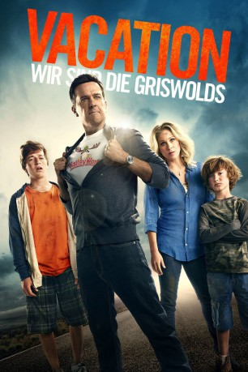

gesehen am 07.12.2015
gesehen am 07.12.2015Alternativ: Vacation gesehen am 07.12.2015
 
 IMDB-Wertung: 6.1 / 10
IMDB-Wertung: 6.1 / 10  Metascore:
Metascore: 
Rusty Griswold kommt ganz nach seinem Vater. Um den Familienzusammenhalt zu stärken, möchte er gemeinsam mit seiner Frau Debbie und ihren beiden Söhnen Jack und Kevin einen spaßigen Ferienausflug unternehmen. Ziel der langen Reise ist der beliebte Familien-Freizeitpark Walley World. Dorthin hat Rusty schon 30 Jahre zuvor als Kind eine ebenso chaotische wie unvergessliche Reise mit seinen Eltern unternommen. Und auch diesmal läuft so gut wie nichts nach Plan. Während die Griswolds von einer unglücklichen Panne zur nächsten stolpern und dabei auch an einem Besuch bei Rustys Schwester Audrey und ihrem unerträglich erfolgreichen Mann Stone nicht vorbeikommen, wird es immer fraglicher, ob sie ihr Urlaubsziel tatsächlich noch erreichen werden.
Jahr: 2015
Dauer: 99 Minuten
FSK: 12
Land: USA Studio: Warner Bros.Tonspuren: DD5.1 - ,
Untertitel: Englisch, Deutsch,
Auflösung: 1080p (1920x800) Größe: 8837 MB
Regisseur:  John Francis Daley, Jonathan Goldstein
John Francis Daley, Jonathan Goldstein
Drehbuch: Jonathan Goldstein, John Francis Daley, John Hughes
Soundtrack: Mark Mothersbaugh
Darsteller:
 Ed Helms als Rusty Griswold
Ed Helms als Rusty Griswold Christina Applegate als Debbie Griswold
Christina Applegate als Debbie Griswold Skyler Gisondo als James Griswold
Skyler Gisondo als James Griswold Chris Hemsworth als Stone Crandall
Chris Hemsworth als Stone Crandall Leslie Mann als Audrey Crandall
Leslie Mann als Audrey Crandall Chevy Chase als Clark Griswold
Chevy Chase als Clark Griswold Beverly D'Angelo als Ellen Griswold
Beverly D'Angelo als Ellen Griswold Charlie Day als Chad
Charlie Day als Chad Ron Livingston als Ethan
Ron Livingston als Ethan Norman Reedus als Trucker
Norman Reedus als Trucker Keegan-Michael Key als Jack Peterson
Keegan-Michael Key als Jack Peterson Regina Hall als Nancy Peterson
Regina Hall als Nancy Peterson Alkoya Brunson als Gary Peterson
Alkoya Brunson als Gary Peterson Nick Kroll als Colorado Cop
Nick Kroll als Colorado Cop Kaitlin Olson als Arizona Cop
Kaitlin Olson als Arizona Cop Michael Peña als New Mexico Cop
Michael Peña als New Mexico Cop David Clennon als Harry Co-Pilot
David Clennon als Harry Co-Pilot Colin Hanks als Jake
Colin Hanks als Jake Michael H. Cole als Male Guest #1
Michael H. Cole als Male Guest #1 Brooke Jaye Taylor als Female Guest #1
Brooke Jaye Taylor als Female Guest #1 Matt Cornwell als Male Guest #2
Matt Cornwell als Male Guest #2 John Francis Daley als Ride Operator
John Francis Daley als Ride Operator Kati Akins als Tri Pi Sorority Girl , uncredited
Kati Akins als Tri Pi Sorority Girl , uncredited Nancy DeMars als Airplane Passenger , uncredited
Nancy DeMars als Airplane Passenger , uncredited Gregory Fears als EMT , uncredited
Gregory Fears als EMT , uncredited Fred Galle als Four Corners Man , uncredited
Fred Galle als Four Corners Man , uncredited Jeff Glover als Wally World Dad , uncredited
Jeff Glover als Wally World Dad , uncreditedDatei: X:\5-Pentalogie(A-Z)\Griswold\Vacation - Wir sind die Griswolds (2015, FSK12, 1920x800).mkv seit 30.11.2015
Festplatte: HD Collection-3(N-Z)-6(A-Z)
 Es gibt insgesamt 8 Filme in der Gruppe '5-Pentalogie(A-Z)\Griswold'
Es gibt insgesamt 8 Filme in der Gruppe '5-Pentalogie(A-Z)\Griswold'